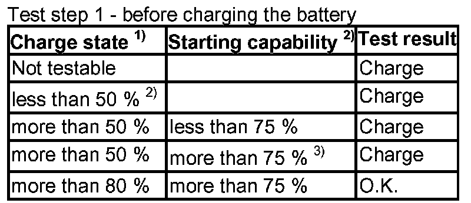
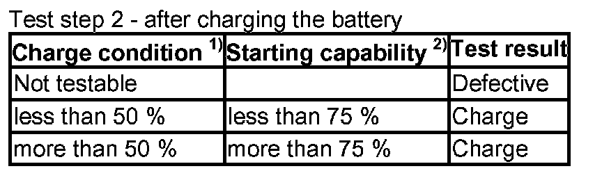

61 20 ... Threshold Values For Battery Inspection of All Battery (Telephone Except For Telephone Battery)
61 20 . . . Threshold values for battery inspection of all battery (telephone except for telephone battery)
Safety instructions for handling vehicle battery.


1. Charge condition and starting power must always be evaluated together
2. When test charging for more than 5 hours, use charger Gossen CG 32 or Siemens / Gossen VB 801
3. Fully charge until charge state is more than 80 %.
NOTE: If battery was checked on the positive terminal in the engine compartment, repeat check directly on battery for sake of safety.